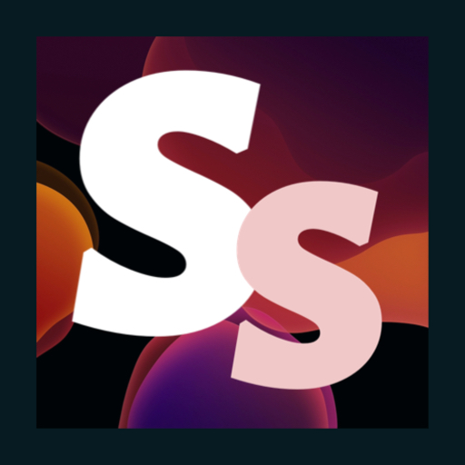

Sapphire611 | Liu liyi
5 年经验的 Node.js 全栈开发工程师。目前在上海从事工业缺陷检测软件的研发， 负责从机台数据采集、MES 对接、缺陷复判到后道回传的完整链路。此前在车联网领域做过服务 多家车企 的 OTA 升级平台，在政企领域做过一套支撑教育、医疗、司法多行业的智能会议预订系统。 习惯把复杂业务拆成清晰的数据流与模块边界。

技能栈
- 语言
- TypeScriptJavaScriptPythonJava
- 后端
- Node.jsKoaExpressNestJSFastAPISpringBoot
- 前端
- ReactVue 2 / 3Next.jsTarouni-app
- 桌面端
- ElectronTauri
- 数据库
- MySQLPostgreSQLMongoDBRedisLevelDB
- 中间件
- RabbitMQMQTT / EMQXZeroMQWebSocket
- 图形可视化
- Konva.jsCanvasSVGEChartsleaflet-heatmap
- 工程化
- LinuxDockerCI / CD阿里云AWSVercelSupabase
- AI
- Claude CodeLangChainRAGMCP
经历
- 负责工业缺陷检测软件（FPC / IC 载板）的研发与维护，技术栈为 Electron + Vue 3 + Konva.js + MongoDB
- 主进程通过 DataBus 中央消息路由统一编排 IPC 通信，按格式分发到对应 handler
- ZMQ 与机台运动控制、相机、前后站实时交互；RabbitMQ 对接甲方 MES 消息队列，支持心跳与断线重连
- 为 15+ 种工厂 / 基地独立维护 e-mapping 生成逻辑，缺陷码映射、坐标编码、输出格式各不相同
- 多维度统计系统（缺陷 / PCS / Lot）+ ECharts 可视化 + leaflet-heatmap 坐标热力映射
- 负责 OTA 后台的设计与开发：车辆 ECU 管理、升级包上传 / 差分 / 签名 / 加密 / 下发
- 设计文件分片 + MD5 校验方案，弱网（<100KB/s）升级成功率从 75% 提升到 98%
- Electron 大文件（>2GB）上传工具：进度可视化 + 失败日志自动上报，问题定位效率提升 70%
- 平台累计服务 6 家车企，日均处理车机上报数据超百万条
- 为教育、医疗、司法行业定制 CMS 及智能会议预订系统，一套后端服务支撑多行业客户
- 设计 RBAC + 组织树混合权限模型，支持数据级权限控制，权限配置效率提升 50%
- 引入 MQTT（EMQX）实现会议室设备联动（门禁屏 / 灯光 / 投影仪），响应延迟 < 1 秒
- 牵头制定后端代码规范，贡献多篇知识库文章
项目
工作项目
面向 FPC / IC 载板产线的缺陷检测与人工复判软件。上游的光学检测机台会自动扫出每块板子上疑似缺陷的位置和图像，但机器会误报，需要人来把关——复判员在界面上逐块复核，判断是真缺陷还是误报、属于哪一类缺陷，软件再把判定结果与统计数据回传给工厂的 MES 系统。
不同工厂的缺陷码、判定规则和对接格式各不相同，软件已适配 15+ 家工厂 / 基地。
面向车企的 OTA 云管理平台：ECU 软件 / 固件远程升级、状态监控、故障诊断。断点续传方案基于文件分片 + MD5 校验，把弱网升级成功率从 75% 拉到 98%。
配套 Electron 上传工具，解决 >2GB 大文件上传的进度可视化与失败日志自动上报。
多行业 CMS 平台（学校 / 法院 / 医院），一套后端服务支撑多行业客户。RBAC + 组织树混合权限模型支持数据级权限控制；通过 MQTT 实现会议室设备联动与状态实时推送。
个人 / 开源项目
十亿像素级工业图像的查看、定位与标注工具，面向版图、显微影像一类的工业场景，完全离线运行。把几 GB 到几十 GB 的整幅图切成瓦片金字塔，像看地图一样缩放浏览，按坐标精确定位到指定区域，并直接在图上圈画标注。
集成 DeepSeek 的全栈 AI 工作站：SSE 流式对话、工具调用（天气 / 时间 / 计算 / 联网搜索）、多 Agent 切换、对话摘要。
同时承担 CMS 内容管理、RBAC 权限、微信小程序用户绑定与数据可视化看板。
面向 MBTI 人群的纪念日管理小程序：纪念日创建、每年重复提醒、倒计时展示。后端直接落在 Supabase，微信登录认证 + PostgreSQL 数据持久化，无需自建服务。
荣誉与证书
- 谢希德综合奖学金特等奖上海杉达学院
- 上海市奖学金上海市教育委员会
- 蓝桥杯 Java B 组 上海市一等奖工业和信息化部人才交流中心
- 优秀学生干部上海杉达学院
- 优秀学生上海杉达学院
- 大学英语六级（CET-6）教育部教育考试院
- 全国计算机等级考试三级教育部教育考试院
- 普通话二级甲等国家语言文字工作委员会
- 驾驶证 C2公安交管部门